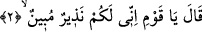

ettiğinde ise onları kahrı ile yakalamıştır.
Nûh (a.s.) kendilerine Cenâb-ı Hakk’ın katından, Tûfan ve boğulma gibi âcil, âhiret
azâbı gibi daha sonra gelen elem verici bir azap gelmeden önce kavmini uyarsın diye
gönderilmiştir. Bunun sebebi kendilerinde asla kıyâmet günü sığınacakları herhangi bir
bahâne kalmasın diyedir. Nitekim Allah bunu bir başka âyet-i kerîmede şu şekilde ifâde
buyurmaktadır: “(Yerine göre) müjdeleyici ve sakındırıcı olarak peygamberler
gönderdik ki insanların peygamberlerden sonra Allah’a karşı bir bahâneleri
olmasın! Allah izzet ve hikmet sâhibidir.” (en-Nisa, 4/165)
“Elîm” kelimesi ya elem verici ya da mubâlağa ifâde ederek “müteellim/çok ızdırap
veren” mânâsınadır. Elem ise cismânî ve rûhânî olmak üzere ikiye ayrılır, ikincisi ise
daha şiddetlidir.
Âyetin tam bu noktasında sanki birisi şöyle bir soru sormaktadır: “Peki Nûh (a.s.)
kavmine gidince ne yaptı?” İşte ikinci âyetten itibâren bu soruya cevap verilerek şöyle
denir:
2. Nûh şöyle dedi: Ey kavmim! Şüpheniz olmasın ki, ben sizi, apaçık uyaran bir
kimseyim.
Nûh (a.s.) onlara şefkat ettiğini ve hayırlarını istediğini göstermek ve gönüllerini hoş
etmek için (ey benim kavmim) diye hitâb etti. “Şüpheniz olmasın ki, ben sizi,” küfrün
ve isyanın âkıbetinden “apaçık uyaran birisiyim.”
“Nezir: uyaran” kelimesinin aslı “münzir” şeklindedir. Nûh (a.s.) uyarıcı olmakla
birlikte müjdeci de olduğu hâlde burada sâdece uyarıcı olarak ifâde edilmesinin sebebi
şudur: Uyarmak, dâvetin tesirli olması açısından “müjdelemekten” daha güçlüdür.
Çünkü insanların çoğu önce kahredileceği korkusuyla, ardından mükâfat arzusuyla itâat
ederler. İnsanların az bir kısmı kemâl ve cemâle duyduğu mahabbet sebebiyle itâat eder.
Fakîr (Bursevî) derim ki: Zâhir olan şudur ki işin başı inzar yâni uyarmaktır. Nitekim
Cenâb-ı Hak, Nebiyy-i Ekrem (s.a.) Efendimiz’e indirmiş olduğu ilk âyetlerden birinde
şöyle buyurmaktadır: “Kalk ve insanları uyar.” (el-Müddessir, 74/2). Müjdeleme ise
işin ikinci kısmıdır. Nitekim Allah Teâlâ şöyle buyurur: “(Ya Muhammed!) müminleri
müjdele!” (el-Bakara, 2/223) Şu hâlde uyarı kâfirlere, müjde ise müminlere yöneliktir.
Her ne kadar îman etmeleri şartı ile kâfir oldukları hâlde onlara da müjde verilmesi
mümkün ise de müjde müminlere mahsustur. Kâfirler ise inkâr hâlinde ancak ve ancak
alaylı bir müjdeyi hak ederler. Cenâb-ı Hakk’ın şu sözünde olduğu gibi: “Allah
yolunda harcamayanlar yok mu, işte onlara elem verici bir azâbı müjdele!” (et-
Tevbe, 9/34)